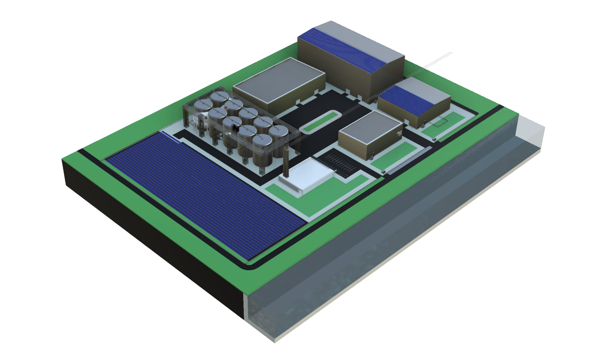
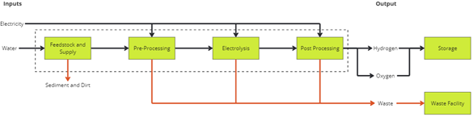
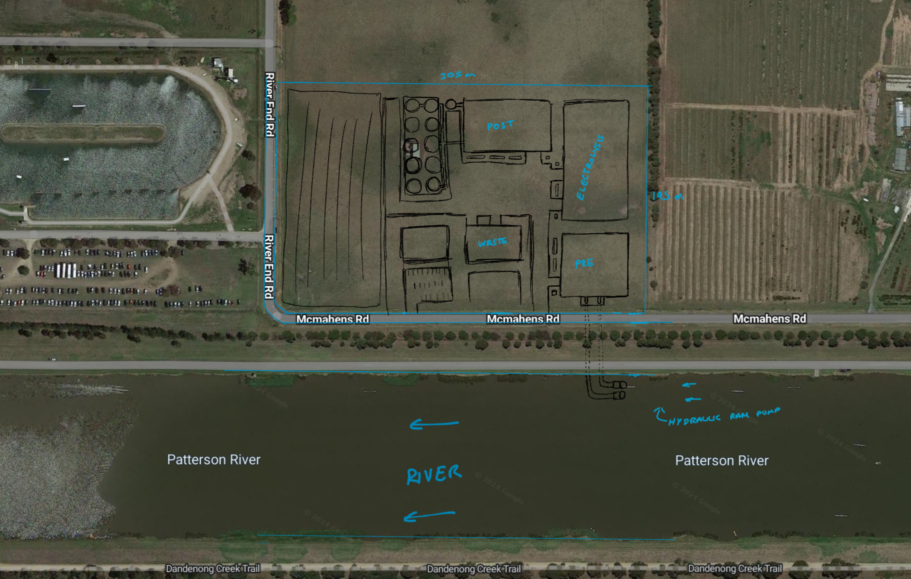
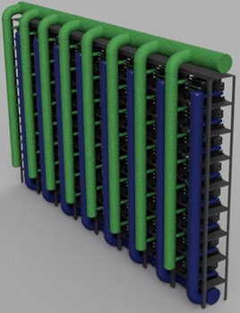
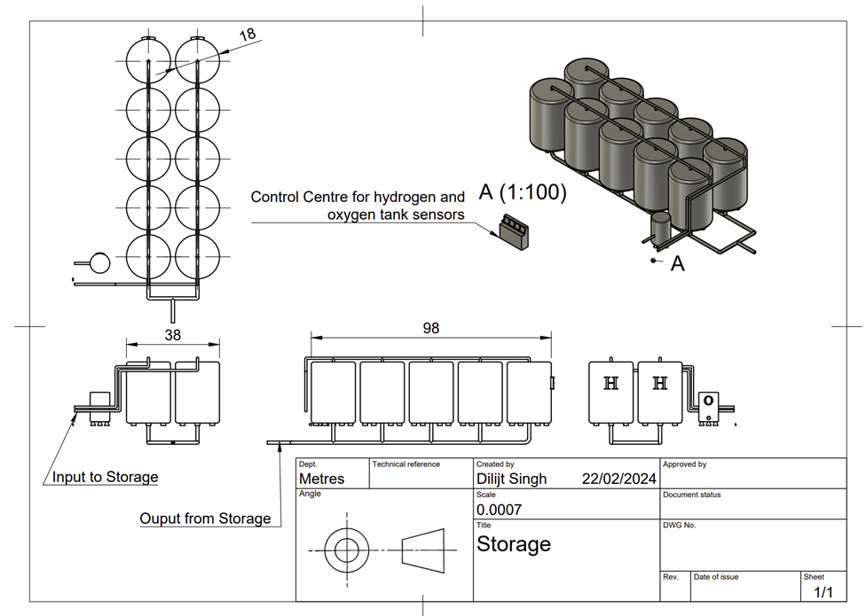
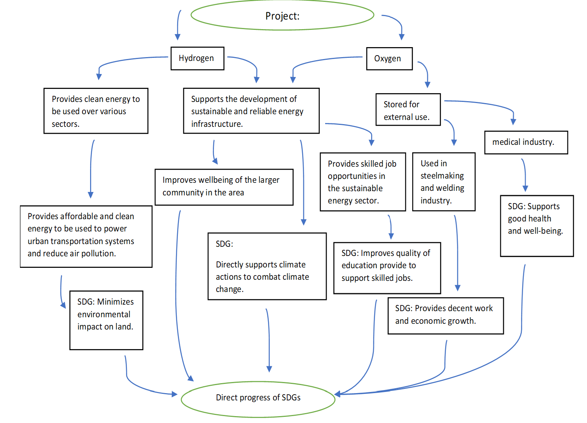

2023
Green Hydrogen Plant
Concept and detailed design of a green hydrogen plant in Australia to support clean energy supply for Melbourne.
Particulars

Full CAD model of site layout
The brief
We were assigned a country and tasked with designing a green hydrogen plant anchored in renewable power. Our proposed site was near Melbourne, Victoria, on flat farmland terrain beside the Patterson River. The core challenge was system integration: water sourcing and treatment, electrolysis selection, gas clean-up, storage, and distribution, while proving safety, sustainability, and practical viability.
What it had to do
My role
I acted as Group Coordinator across both parts of the project. In Assignment 1 (multi-discipline), I coordinated feedstock and supply work, managed project structure (Gantt chart, appendices), supported risk management and the business case, and kept the final concept coherent. In Assignment 2 (mechanical detail design), I coordinated the mechanical workflow and owned major electrolysis workstreams, drawings, CAD, P&ID and the presentation.
"Coordination was the job: keep the system joined up, keep work moving, and keep quality consistent."
- Coordinated two separate team structures across the module split.
- Owned planning and delivery artefacts (PDS, drawings, P&ID, presentation support).
- Worked across technical + non-technical constraints: safety, sustainability, and viability.
How it worked
The end-to-end system followed a clear chain: water intake and pre-processing, electrolysis, post-processing, storage (gas and liquid options), and distribution via pipelines to end users.

Overall Functional Analysis
The technical work
Site selection and inputs
The concept design located the facility next to the Patterson River to support water supply for hydrogen production, with pre-processing to remove debris and chemicals before electrolysis. The overall intent was to supply clean energy to Melbourne while keeping infrastructure practical and scalable.

Electrolysis design (concept + detailed)
The concept design used a solid polymer electrode membrane approach for hydrogen production, with post-processing to ensure purity. In the mechanical detail design, we defined operating targets for both low-temperature and high-temperature electrolysis, including 60°C and 750°C operating conditions, and enforced a minimum production requirement of 14,000 kg/day.

Thermal management and coolant loop (high-temp electrolysis)
High-temperature electrolysis introduces a thermal management problem. We sized a coolant circulation concept using high-boiling fluids such as molten salt or synthetic oil. An example sizing case used a 1,000 kW input and 70% efficiency assumption to estimate a 250 kW heat load, which drove a coolant mass flow of 4.17 kg/s for a 30 K temperature rise.
Storage strategy (gas + liquid)
We considered both gas storage and liquid hydrogen storage. For the liquid route, the design used two identical LH2 tanks, with each tank sized at 2,600,000 kg capacity and an outer diameter of 20.76 m. Target output was set at 5,000,000 kg/year of liquid hydrogen in the detailed design.

Risk and sustainability
The concept design included structured risk and sustainability thinking. Risk methods included HAZOP and fault tree style thinking, while sustainability covered lifecycle-style considerations and alignment with wider outcomes such as clean energy supply and long-term operation. A business case view (PEST-style) was used to show how policy, economics, public acceptance, and technology readiness shape whether the facility is viable.

Sustainability Development Goals Progression
What I would change
A hydrogen plant is a systems problem first, then a component problem. The quickest way to lose quality is to let teams optimise locally without tight interface control. Next time, I would lock interface definitions earlier (flows, pressures, purity targets, thermal limits), then force every calculation and CAD decision to trace back to those constraints.
- Earlier interface freeze, then parallel work without rework churn.
- One source of truth for mass/energy balance feeding CAD, P&ID, and sizing.
- Clear acceptance tests per subsystem, not just "looks right" integration.